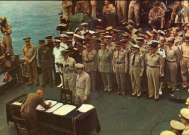

Osa
Aliance
Jako Osa Berlín–Řím, později Osa Berlín–Řím–Tokio, zkráceně Fašistická osa nebo jen Osa, se označovalo vojensko-politické uskupení nacistického Německa, Itálie a následně Japonska. Toto spojenectví bylo ustanoveno německo-italskou smlouvou z října 1936, která určovala německé a italské sféry vlivu v Evropě. Na tuto základní smlouvu navázal tzv. Ocelový pakt z května 1939, ve kterém se oba spojenci dohodli na společném postupu v případě války v Evropě a na s tím související ekonomické a vojenské výpomoci. Ještě v roce 1936 se k Ose přidalo Japonsko, které s Německem uzavřelo Pakt proti Kominterně (tj. spojenectví namířené proti Komunistické internacionále a potažmo proti Sovětskému svazu). Dne 27. září 1940 byl v Berlíně v rámci Osy uzavřen Pakt tří, který potvrzoval spojenectví fašistického režimu v Itálii, nacistického v Německu a militaristického v Japonsku. K Paktu tří se následně připojily německé satelity bojující na straně Osy.
Válka v Číně
Most Marco Polo
Japonsko vyčlenilo pro tažení na 300 000 vojáků, kteří byli dobře vyzbrojení i vycvičení. Vojáci Kuomintangu a čínských komunistů měli sice početní převahu, ale špatný výcvik, nekvalitní výzbroj a absence námořních i leteckých sil je stavěla do velké nevýhody. Kuomintang a komunisté navíc byli ve stavu občanské války. 7. července 1937 došlo k incidentu na mostě Marca Pola – Japonci uměle vyvolané potyčce na předměstí Pekingu – jenž se stal záminkou pro vypuknutí Druhé čínsko-japonské války.
Japonská armáda rychle obsadila Peking a postoupila na západ
a
jih. Na podzim se však postup začal zpomalovat kvůli prodloužení zásobovacích tras. 13. srpna se v
Šanghaji
vylodilo 10 000 vojáků a začala bitva trvající 92 dní. 25. září čínští komunističtí partyzáni
porazili japonské síly v provincii Šan-si, což velmi
pozvedlo morálku Číňanů a zesílilo odpor proti okupantům. V
listopadu tři japonské armády zaútočili na Nanking
a 13. prosince jej dobyly. Po několik týdnů bylo obyvatelstvo vystaveno teroru, během kterého
docházelo k popravám, mučení a hromadnému znásilňování. Celkový
počet obětí se odhaduje až na 300 000. Tento akt známý
jako „Znásilnění Nankingu“ .
25. září čínští komunističtí partyzáni
porazili japonské síly v provincii Šan-si, což velmi
pozvedlo morálku Číňanů a zesílilo odpor proti okupantům. V
listopadu tři japonské armády zaútočili na Nanking
a 13. prosince jej dobyly. Po několik týdnů bylo obyvatelstvo vystaveno teroru, během kterého
docházelo k popravám, mučení a hromadnému znásilňování. Celkový
počet obětí se odhaduje až na 300 000. Tento akt známý
jako „Znásilnění Nankingu“ .
V roce 1938 zahájila císařská armáda ofenzívu na Žluté řece a pokračovala v dobývání čínských území. Na přelomu března a dubna porazili Číňané Japonce v krvavé bitvě u Š’-ťia-čuangu. 30. září došlo k první bitvě o Čchang-ša v provincii Chu-nan, kde císařská armáda utrpěla strašlivé ztráty.
 V květnu 1940 byla
zahájena
ofenzíva v provincii Chu-pej. Japonští vojáci však již byli vyčerpaní,
unavení a potřebovali doplnit stavy. Bylo proto
rozhodnuto vyhlásit mobilizaci a v červenci armáda povolala do zbraně jeden milion mužů .
Následovalo masivní posílení bojových jednotek. 25. září vstoupila 5. divize do Hanoje a o dva
dny
později byl uzavřen pakt – Osa
Berlín–Řím–Tokio. Ve snaze zastavit japonskou agresi v Číně vyvíjely USA na Japonsko nátlak
prostřednictvím
ekonomických embarg, uvalených na export železné rudy, mědi, niklu, strojů a zařízení k těžbě ropy.
V květnu 1940 byla
zahájena
ofenzíva v provincii Chu-pej. Japonští vojáci však již byli vyčerpaní,
unavení a potřebovali doplnit stavy. Bylo proto
rozhodnuto vyhlásit mobilizaci a v červenci armáda povolala do zbraně jeden milion mužů .
Následovalo masivní posílení bojových jednotek. 25. září vstoupila 5. divize do Hanoje a o dva
dny
později byl uzavřen pakt – Osa
Berlín–Řím–Tokio. Ve snaze zastavit japonskou agresi v Číně vyvíjely USA na Japonsko nátlak
prostřednictvím
ekonomických embarg, uvalených na export železné rudy, mědi, niklu, strojů a zařízení k těžbě ropy.
2. dubna 1941 Číňané porazili japonská vojska v bitvě u Šang-žao. 13. dubna uzavřeli Japonsko a Sovětský svaz dohodu o neútočení. Spojené státy zvýšily tlak a uvalily na Japonsko plíživé ropné embargo. Agresivní a bezohledný postup nevedl k porážce Kuomintangu, a tak se „čínský incident“ protáhl až do konce 2. světové války. Spojené státy a Spojené království podporovaly generála Čankajška a dodávali mu zbraně a po vstupu Spojených států do války pak na území neokupované Číny postavili Američané několik svých základen. Tento „čínský incident“ pak nutil japonské velení shromažďovat zde stále větší síly, které nemohli použít ani v Barmě, ani v Tichomoří.
Tichomoří
Ráno 7. prosince 1941 svaz šesti japonských letadlových lodí bez vyhlášení války napadl svými palubními letadly americkou námořní základnu Pearl Harbor na Havajských ostrovech. O den později, 8. prosince 1941, USA vypověděly válku Japonsku.
Jedinou významnější akcí Američanů byl nálet 16 bombardérů B-25B Mitchell na Tokio 18. dubna. Pak se situace začala obracet, neboť postup japonských pozemních jednotek byl zastaven ve vnitrozemí ostrova Nová Guinea a námořní síly nedokázaly zlomit odpor spojeneckého námořnictva, s nímž se střetly v bitvě v Korálovém moři.
Japonské námořní síly vyvolaly dlouho plánovanou rozhodující bitvu s americkými letadlovými loděmi u Midway, ale oproti předpokladům v ní utrpěly zdrcující porážku a jejich útočný potenciál upadl natolik, že už neexistovala žádná naděje na úspěšné vedení útočné námořní války většího rozsahu.
V 9. ledna 1945 se Američané vylodili na Luzonu. 1. února Spojenci osvobodili Severní Borneo. Dne 19. února se Američané vylodili na Iwodžimě. Tento ostrov v půli cesty mezi japonskými ostrovy a Spojenci obsazeným územím byl strategicky důležitý pro americké letectvo a měl být využit pro další útoky na Japonsko. Obránci ostrova vedení generálem Tadamičim Kuribajaši udrželi ostrov do 26. března. Poté byl ostrov využit jako letecká základna. 1. dubna se Američané vylodili na Okinawě, čímž začal útok na japonské ostrovy. Bitva trvala až do 21. června a na americké straně si vyžádala 12 513 mrtvých a 38 916 zraněných, což byly největší ztráty v tichomořské válce. Cílem Američanů bylo zajistit ostrov pro plánovanou invazi na Japonské ostrovy, ke které však nedošlo.
Kapitulace
Kapitulaci Japonska oznámil císař Hirohito v rozhlasovém projevu 15. srpna 1945. Formálně byla ukončena druhá světová válka podpisem kapitulačních listin 2. září 1945. Na konci července 1945 nebylo Japonské císařské námořnictvo schopné provádět velké operace a invaze Spojenců do Japonska byla na spadnutí. V Postupimské deklaraci z 26. července 1945 vyzvaly Spojené státy, Spojené království a Čína k bezpodmínečné kapitulaci japonských ozbrojených sil – alternativou bylo „rychlé a úplné zničení“. Vrchní válečná rada, známá také jako „Velká šestka“, veřejně deklarovala svůj záměr bojovat až do hořkého konce. Avšak, ve snaze dosáhnout pro Japonsko příznivějších podmínek, důvěrně požádala Sovětský svaz o zprostředkování mírových jednání. Sovětská diplomacie udržovala v Japoncích dojem, že Sovětský svaz je ochoten zprostředkovat jednání o míru, současně však Sověti připravovali útok na japonská vojska v Mandžusku a v Koreji. Plnili tak sliby, které tajně dali Američanům a Britům na konferencích v Teheránu a na Jaltě.
Japonští představitelé se 19. srpna setkali s generálem MacArthurem v Manile na Filipínách, aby dostali podrobnější informace o plánech okupačního uspořádání. Do Acugi v prefektuře Kanagawa přiletělo 28. srpna 150 Američanů, tím byla okupace Japonska fakticky zahájena. Rychle je následovaly další jednotky, mezi nimi USS Missouri. MacArthur přijel do Tokia 30. srpna a 2. září okolo deváté hodiny dopoledne proběhl na palubě USS Missouri pečlivě připravovaný ceremoniál podpisu kapitulačních listin.
Letectvo
Ki-27 otsu
Ki-27 otsu byl jednomotorový stíhač který letěl rychlostí až 476km/h
Historie
V červnu 1935 Generální štáb armádního letectva vyhlásil soutěž mezi firmami Nakadžima, Micubiši a Kawasaki na dodání dvou prototypů pokročilého stíhacího letounu, který by nahradil dvouplošníky Kawasaki Ki-10. Zadání znělo na celokovový jednoplošník vyzbrojený dvojicí kulometů ráže 7,7 mm, který by dosahoval rychlosti 450 km/h a vystoupal do výšky 5000 m za 6 minut. Ze soutěže vzešly typy Nakadžima Ki-27, Kawasaki Ki-28 a Micubiši Ki-33 (modifikace námořního typu A5M). Nakadžima využila koncepci svého jednoplošníku Ki-11, který byl neúspěšný právě v soutěži, ze které byl vybrán typ Kawasaki Ki-10. Pro letoun byl zvolen vzduchem chlazený devítiválcový hvězdicový motor Nakadžima Ha-1a Kotobuki a pevný podvozek.
Ki-45 otsu

Ki-45 otsu byl dvoumotorový dvouposádkový záchytný stíhač který letěl rychlostí až 551km/h
Historie
Letoun byl používaný zejména proti americkým bombardovacím svazům. Spojenci dali tomu respektovanému protivníkovi kódové jméno Nick. Japonci se Ki-45 naučili používat i k nočnímu stíhání, kdy byly letouny naváděny pomocí rádiového spojení ze země a k vyhledávání rozsvěcovali světlomety umístěné v přední části trupu. Jejich nasazovaní bylo poměrně úspěšné i vůči americkým létajícím pevnostem B-29 20. letecké armády USAAF. Již při prvním náletu Superfortressů z čínských základen na Kjúšú 15. června 1944 bylo sedm B-29 sestřeleno Ki-45. Od podzimu 1944 do konce války sestřelily Ki-45 4. Sentai ze základny Usuki v prefektuře Óita více než 150 Boeingů B-29. K těmto úspěchům dopomohla také improvizovaná úprava, spočívající v odstranění trupové nádrže, na jejíž místo byly za kabinou pilota instalovány dva kupředu šikmo vzhůru zaměřené kulomety typ 1 ráže 12,7 mm (tzv. Schräge Musik). V závěru války byly Ki-45 používány i k sebevražedným náletům japonských pilotů na americké lodě u Nové Guineje.
Ki-49-I
Ki-49-I byl dvoumotorový osmiposádkový frontový bombardér který letěl rychlostí až 449km/h
Historie
Společnost Nakadžima obdržela bez soutěže specifikace na nový bombardér přímo od Generálního štábu armádního letectva. Vývoj Ki-49 zahájil ing. Nišimura v roce 1937, později vedení prací převzal jeho asistent T. Kojama. Nový stroj měl dosahovat rychlosti 500 km/h při doletu 3000 km, nosnosti 1000 kg pum a nahradit starší letouny Micubiši Ki-21. Navrhovanou obrannou hlavňovou výzbroj měl tvořit pohyblivý kanón Ho-1 ráže 20 mm v horním střelišti, ve zbylých instalacích v prosklené přídi, v zádi trupu, malých oknech na boku a spodní části trupu pak lehké kulomety ráže 7,7 mm. Pasivní ochranu tvořily samosvorné palivové nádrže a pancéřované prostory osádky. Odtoková hrana křídla blíže k trupu byla opatřena velkými Fowlerovými klapkami. Řada Ki-49 byla v závěru války použita k sebevražedným útokům, naložena 1600 kg výbušnin a řízena dvoučlennou osádkou.
Těžká technika
Ši 4 Či-To osoi

Ši 4 Či-To osoi byl pětiposádkový střední tank který jel rychlostí až 50km/h
Historie
Typ 4 Či-To byl nejlepším japonským tankem vyrobeným za druhé světové války. Projekt vznikl roku 1944, ovšem vzhledem k neschopnosti japonského průmyslu bylo do konce války vyrobeno pouze 6 prototypů, z toho 2 dokončené. K bojovému nasazení nedošlo. Byla zamýšlena i těžší a silnější verze Typ 5 Či-Ri, avšak do konce války nebyl dokončen jediný prototyp.
Chi Ha Long Gun

Chi Ha Long Gun byl pětiposádkový stíhač tanků který jel rychlostí až 43km/h
Historie
Vzhledem k tomu, že Chi-Ha byla konstrukčně velmi pevná a je schopna odolat velkému množství přídavných závaží při zachování stabilní úrovně napětí a rychlosti. To z něj dělalo skvělou zkušební základnu pro těžší zbraně a vybavení. Jednou z těchto variant byla přestavba Chi-Ha na konci války, kterou provedlo velitelství konstrukce japonského námořnictva, aby mohl nést námořní dělo 12 cm/45 10. roku. První zkoušky se uskutečnily v dubnu 1945 na pohyblivost a střelbu. Bylo vystřeleno 30 ran na různé vzdálenosti s vylepšenými mířidly kanonu, přičemž nejdelší výstřel během testu byl asi 3 km. Přestože byly schváleny plány výroby, nebyla do konce války zaznamenána žádná další vozidla kromě prototypu, která by byla postavena nebo téměř dokončena. Prototyp zaznamenaný USA byl nalezen u 15. jednotky v Jokosuce a je jediným záznamem o uvedeném vozidle.
Ši 98 Ta-se
Ši 98 Ta-se byl tříposádkový protiletadlový tank který jel rychlostí až 49km/h
Historie
Tank Type 98 20 mm AAG byl japonský samohybný protiletadlový kanón používající zdvojený 20mm protiletadlový kanón Soki Type II. Byly kombinovány s podvozkem tanku Type 98 Ke-Ni. Obsluha děla pracovala z vyvýšené plošiny se skromnou ochranou z boků - dvojče 20mm kanonu střílející přes velký štít Gun poskytovalo posádce další ochranu z tohoto směru. V listopadu 1941 byl zahájen vývoj protiletadlové verze tanku Type 98 s 20mm AA kanónem. během vývoje tanku s AA kanónem experimentovala japonská císařská armáda s různými konfiguracemi